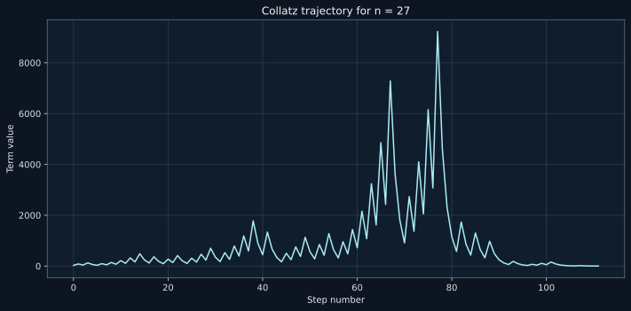
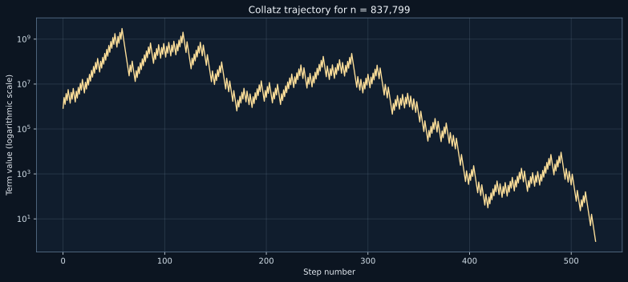

An introduction to the Collatz conjecture, its mathematical structure, experimental verification with Python, and an efficient solution to Project Euler Problem 14.
Python
Project Euler
Number Theory
Author
Ashish K. Srivastava
Published
July 12, 2026
The Collatz rule is easy to state, but its long-term behaviour is still not understood. We begin with the rule itself, then use it to solve the finite search problem posed in Project Euler Problem 14.
The Collatz Process
For a positive integer, apply one of two operations: halve an even number, and replace an odd number by three times the number plus one. Repeating this instruction produces a Collatz sequence, also called an orbit.
Let \(\mathbb{N}=\{1,2,3,\ldots\}\). The Collatz map is
\[
T(n)=
\begin{cases}
\dfrac{n}{2}, & \text{if } n \text{ is even},\\[6pt]
3n+1, & \text{if } n \text{ is odd}.
\end{cases}
\]
Starting at \(n\), the successive values are \(n,T(n),T^2(n),\ldots\). Here \(T^k(n)\) means that the map has been applied \(k\) times.
The Collatz Conjecture
The conjecture states that every positive starting value eventually reaches \(1\):
\[
\forall n\in\mathbb{N},\quad
\exists k\geq 0
\text{ such that }
T^k(n)=1.
\]
Once the value \(1\) is reached, iteration continues around the familiar cycle
\[
1\rightarrow4\rightarrow2\rightarrow1.
\]
For chain lengths, we stop at the first occurrence of \(1\).
Why this is still a conjecture
Computers have checked the rule for extraordinarily many starting values. That is convincing evidence, but it is not a proof. A finite computation can only check finitely many integers; the statement concerns every positive integer.
A proof would have to rule out both an orbit that grows without bound and a non-trivial cycle other than \(1\to4\to2\to1\). Neither has been ruled out for all positive integers. The original Collatz conjecture therefore remains a conjecture, not a theorem.
\[
\text{number of steps}
=
\text{number of terms}-1.
\]
Generating Collatz Sequences with Python
Before writing a search program, we should be able to generate one orbit correctly. The function below checks that its input is a positive integer and returns the sequence up to the first \(1\).
Hide code
def collatz_sequence(n):"""Return the Collatz sequence from positive integer n to its first 1."""ifnotisinstance(n, int) orisinstance(n, bool) or n <1:raiseValueError("n must be a positive integer") sequence = [n]while n !=1:if n %2==0: n //=2else: n =3* n +1 sequence.append(n)return sequencesequence_13 = collatz_sequence(13)print(sequence_13)print(f"Terms: {len(sequence_13)}")print(f"Steps: {len(sequence_13) -1}")
The output agrees with the hand calculation: \(13\) has ten terms and nine steps.
For a few selected values, it is useful to record the chain length and the largest value reached. This is experimental verification of particular cases, not a proof of the conjecture.
Hide code
def collatz_summary(n):"""Return basic information about the Collatz sequence starting at n.""" sequence = collatz_sequence(n)return {"start": n,"terms": len(sequence),"steps": len(sequence) -1,"maximum": max(sequence), }test_values = [6, 10, 13, 19, 27, 97]summaries = [collatz_summary(n) for n in test_values]for summary in summaries:print(summary)
The chain beginning at \(27\) is worth noticing. It starts small, rises as high as \(9232\), and only then returns to \(1\). This is a useful reminder that the rule does not produce a steadily decreasing sequence.
A plot makes the rise and fall of this orbit easier to see.
Hide code
%config InlineBackend.figure_format ='svg'import matplotlib.pyplot as pltfig, ax = plt.subplots(figsize=(10, 5))fig.patch.set_facecolor("#0c1521")ax.set_facecolor("#101d2d")ax.plot(range(len(sequence_27)), sequence_27, linewidth=1.5, color="#a9ecf4")ax.set_xlabel("Step number", color="#e7edf4")ax.set_ylabel("Term value", color="#e7edf4")ax.set_title("Collatz trajectory for n = 27", color="#f1f6fb")ax.tick_params(colors="#d5e1eb")for spine in ax.spines.values(): spine.set_color("#5d7590")ax.grid(True, color="#7890a8", alpha=0.25)fig.tight_layout()plt.show()

Project Euler Problem 14
The Project Euler question is finite. It asks:
Among all starting integers satisfying
\[
1\leq n<1{,}000{,}000,
\]
find the starting value that produces the longest Collatz chain before reaching \(1\).
Only the starting number must be below one million. Terms later in the chain may be much larger. This is important: the eventual winner rises to more than two billion.
The Mathematical Structure of the Search
Define
\[
L(n)=\text{number of terms from }n\text{ to the first occurrence of }1.
\]
The key observation is that chains share tails. Once a chain reaches a previously studied value, the remaining work is already known. For example, if \(L(10)\) is known, then
\[
L(20)=1+L(10),
\]
\[
L(40)=1+L(20),
\]
and
\[
L(13)=1+L(40).
\]
This recurrence is the mathematical reason that memoization works. Before we write the efficient program, it is useful to see the direct method.
A Direct Python Solution
The direct method constructs a complete chain for every possible starting value. It is correct, but it repeatedly computes common tails such as \(40\to20\to10\to\cdots\to1\).
Hide code
def longest_collatz_naive(limit):"""Return the start and term count of the longest chain below limit."""ifnotisinstance(limit, int) orisinstance(limit, bool) or limit <=1:raiseValueError("limit must be an integer greater than 1") best_start, best_length =1, 1for n inrange(1, limit): current_length =len(collatz_sequence(n))if current_length > best_length: best_start, best_length = n, current_lengthreturn best_start, best_lengthprint(longest_collatz_naive(1_000))
(871, 179)
For a small limit this is perfectly adequate. At one million starts, however, the repeated tails become expensive. The recurrence for \(L(n)\) tells us exactly what to store.
Memoization
Start with the known value \(L(1)=1\). When a new path reaches a value already stored in a cache, work backwards through the new part of the path. Each predecessor has a chain one term longer than its successor.
Hide code
def collatz_length(n, cache):"""Return the term count for n, extending cache along a new tail."""ifnotisinstance(n, int) orisinstance(n, bool) or n <1:raiseValueError("n must be a positive integer") original_n = n path = []while n notin cache: path.append(n)if n %2==0: n //=2else: n =3* n +1 known_length = cache[n]for value inreversed(path): known_length +=1 cache[value] = known_lengthreturn cache[original_n]def longest_collatz(limit):"""Return the start, term count, and cache for chains below limit."""ifnotisinstance(limit, int) orisinstance(limit, bool) or limit <=1:raiseValueError("limit must be an integer greater than 1") cache = {1: 1} best_start, best_length =1, 1for n inrange(1, limit): current_length = collatz_length(n, cache)if current_length > best_length: best_start, best_length = n, current_lengthreturn best_start, best_length, cache
Now we can translate the recurrence into Python. The following finite computation solves the Project Euler search; it does not claim to prove the Collatz conjecture.
Hide code
best_start, best_length, length_cache = longest_collatz(1_000_000)print(f"Starting number: {best_start}")print(f"Number of terms: {best_length}")print(f"Number of steps: {best_length -1}")
Starting number: 837799
Number of terms: 525
Number of steps: 524
NoteFinal result
\[
\boxed{837799}
\]
is the starting value below one million with the longest Collatz chain. The chain contains
\[
\boxed{525\text{ terms}}
\]
and requires
\[
\boxed{524\text{ steps}}.
\]
Inspecting the Winning Sequence
The winning chain begins with large oscillations but ends in the familiar tail through \(40,20,10,5,\ldots,1\).
Hide code
winning_sequence = collatz_sequence(best_start)print("First 15 terms:")print(winning_sequence[:15])print("\nLast 15 terms:")print(winning_sequence[-15:])print(f"\nMaximum value reached: {max(winning_sequence):,}")
First 15 terms:
[837799, 2513398, 1256699, 3770098, 1885049, 5655148, 2827574, 1413787, 4241362, 2120681, 6362044, 3181022, 1590511, 4771534, 2385767]
Last 15 terms:
[70, 35, 106, 53, 160, 80, 40, 20, 10, 5, 16, 8, 4, 2, 1]
Maximum value reached: 2,974,984,576
Hide code
%config InlineBackend.figure_format ='svg'import matplotlib.pyplot as pltfig, ax = plt.subplots(figsize=(11, 5))fig.patch.set_facecolor("#0c1521")ax.set_facecolor("#101d2d")ax.plot(range(len(winning_sequence)), winning_sequence, linewidth=1.35, color="#ffe09a")ax.set_yscale("log")ax.set_xlabel("Step number", color="#e7edf4")ax.set_ylabel("Term value (logarithmic scale)", color="#e7edf4")ax.set_title("Collatz trajectory for n = 837,799", color="#f1f6fb")ax.tick_params(colors="#d5e1eb")for spine in ax.spines.values(): spine.set_color("#5d7590")ax.grid(True, color="#7890a8", alpha=0.25)fig.tight_layout()plt.show()

The logarithmic vertical scale is necessary here: the chain reaches \(2{,}974{,}984{,}576\), far above its starting value.
Mathematical Ideas Connected with the Collatz Conjecture
The Collatz map is a discrete dynamical system: it studies the long-term behaviour of repeatedly applying a function on the positive integers. Questions about iteration include whether an orbit reaches a cycle, whether it escapes, and how long it takes to fall below its starting value.
The total stopping time is
\[
\sigma_\infty(n)=\min\{k\geq0:T^k(n)=1\}.
\]
When the orbit reaches \(1\), \(L(n)=\sigma_\infty(n)+1\). A related stopping time is the first \(k\geq1\) for which \(T^k(n)<n\). Proving that every starting value eventually falls below itself would give a route to the conjecture by strong induction, but that statement is also unproved.
For odd \(n\), the accelerated Collatz map, often called the Syracuse map, divides all powers of two out of \(3n+1\) at once:
\[
S(n)=\frac{3n+1}{2^{\nu_2(3n+1)}}.
\]
Here \(\nu_2(m)\) is the exponent of \(2\) in \(m\). The map sends odd integers directly to odd integers. Parity sequences, or parity vectors, record the even and odd decisions along an orbit. Once a finite parity pattern is fixed, the iterate has an affine form involving powers of \(3\) and \(2\); the difficulty is that the pattern depends on the orbit itself.
The directed Collatz graph has an arrow \(n\longrightarrow T(n)\) from every positive integer. Reversing the arrows produces inverse Collatz trees, which make shared tails visible. Probabilistic heuristics model the powers of two dividing \(3n+1\) as if they were random; they help explain the observed downward tendency, but they are not proofs because actual parity events are deterministic and dependent.
There are important partial results. Terence Tao proved that, in a precise logarithmic-density sense, almost all orbits attain values below any function that tends to infinity. “Almost all” is not “all”, so this does not settle the original conjecture. Generalized Collatz problems can even be undecidable in some settings. That result concerns generalized systems; it does not show that the original Collatz conjecture is undecidable.
Conclusion
The Collatz conjecture remains open. Project Euler Problem 14 is nevertheless a finite problem, and the recurrence
\[
L(n)=1+L(T(n))
\]
turns its repeated tails into a practical memoized computation. The longest chain below one million starts at \(837799\) and has \(525\) terms.